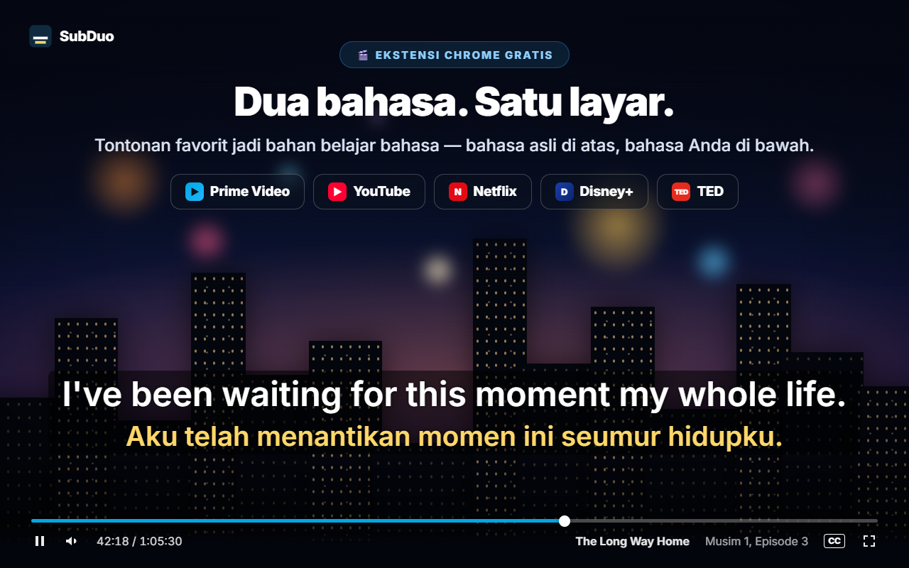
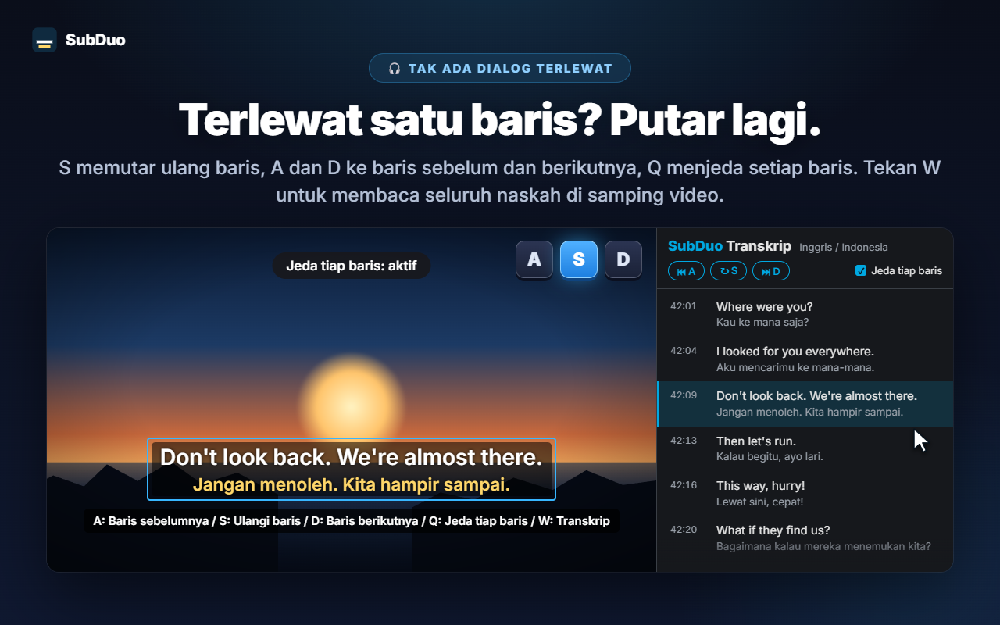
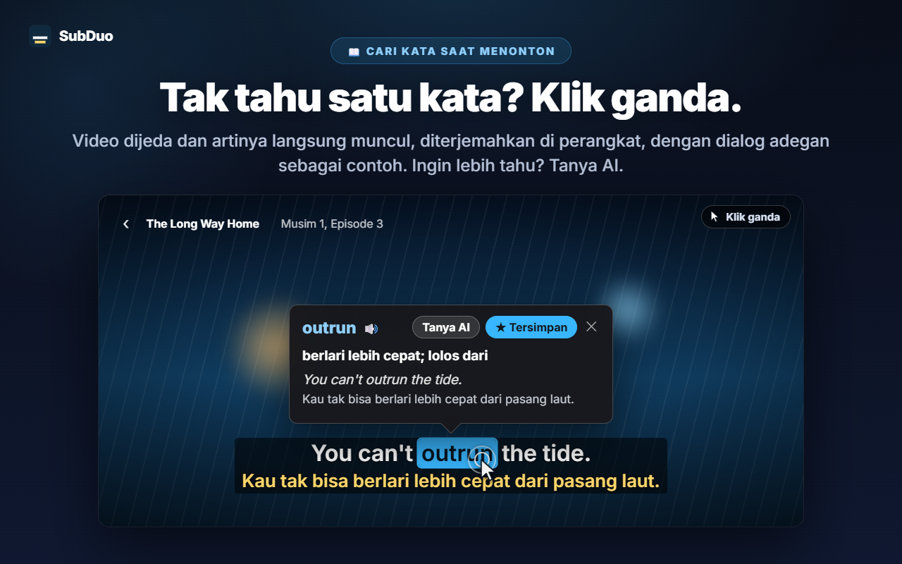
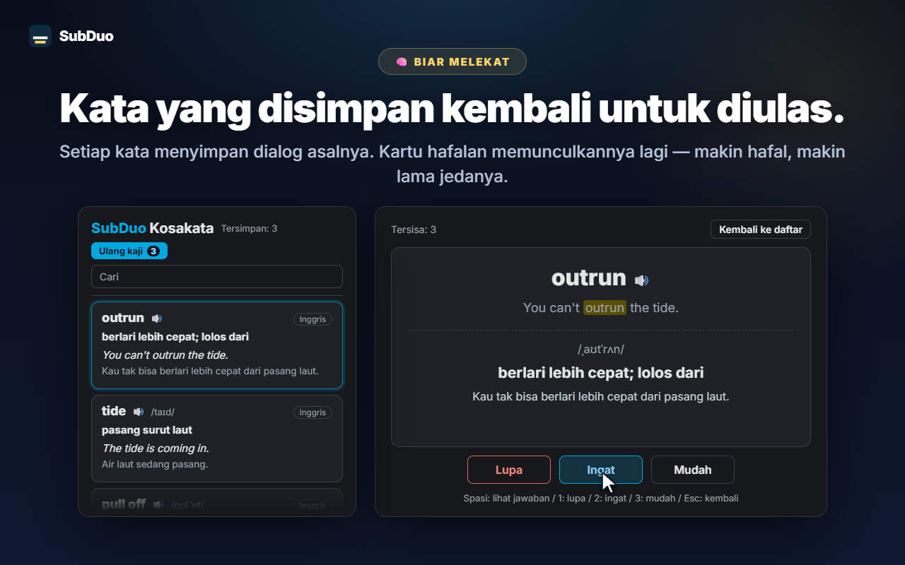

Dua bahasa takarir pilihan
Setiap takarir yang disediakan situs terdeteksi saat video diputar, termasuk takarir otomatis YouTube. Pilih satu bahasa per baris, atau sembunyikan salah satunya.
SubDuo menampilkan takarir dua bahasa sekaligus — bahasa asli di atas, bahasa Anda di bawah. Klik ganda sebuah kata untuk melihat artinya, putar ulang baris dengan satu tombol, dan simpan yang Anda pelajari di daftar kosakata bawaan.
Memakai takarir yang sudah disediakan tiap situs · Tanpa akun · Takarir tetap di browser Anda
Pemutar streaming hanya menampilkan satu bahasa takarir dalam satu waktu. SubDuo menambahkan bahasa kedua — beserta alat untuk belajar darinya.
Tampilan asli ekstensi, dalam bahasa Anda.

Pilih dua dari takarir yang tersedia untuk judul itu — bahasa asli di atas, bahasa Anda di bawah. Seret takarir ke mana saja, gulir di atas baris untuk mengubah ukurannya, dan klik kanan untuk mengubah warna, transparansi atau efek buram.

Tekan S untuk mengulangi baris, A dan D untuk mundur dan maju, dan Q untuk jeda otomatis di tiap baris. Tekan W untuk membuka transkrip di panel samping Chrome — dua bahasa, baris demi baris — lalu klik baris mana pun untuk melompat ke sana.

Video dijeda dan sebuah kartu langsung menampilkan artinya, diterjemahkan di perangkat Anda oleh penerjemah bawaan Chrome, dengan dialog adegan itu sendiri sebagai contoh. Alt+seret untuk memilih frasa. Tekan “Tanya AI” untuk arti sesuai konteks, pelafalan dan contoh kalimat.

Setiap kata yang disimpan membawa baris asalnya. Cari dan saring daftar kosakata, putar pelafalannya, dan ulang kaji dengan kartu hafalan — makin Anda hafal sebuah kata, makin lama ia baru muncul lagi.
Tanpa akun, tanpa layar pengaturan. Pasang lalu tekan putar.
Pasang SubDuo dari Chrome Web Store, lalu putar video di Prime Video, YouTube, Netflix, Disney+ atau TED.
Klik ikon SubDuo dan pilih satu bahasa takarir untuk baris atas dan satu untuk baris bawah. Hanya takarir yang tersedia untuk judul itu yang ditampilkan.
Klik ganda kata untuk mencari artinya, tekan A, S atau D untuk memutar ulang baris, dan buka daftar kosakata dari popup.
Dibuat untuk Anda yang belajar sambil menonton — dan ingin takarir tidak mengganggu sampai dibutuhkan.
Setiap takarir yang disediakan situs terdeteksi saat video diputar, termasuk takarir otomatis YouTube. Pilih satu bahasa per baris, atau sembunyikan salah satunya.
Klik ganda atau Alt+klik sebuah kata, atau Alt+seret sebuah frasa. Pemutaran dijeda dan terjemahannya muncul di atas video, diproses di perangkat Anda.
Arti sesuai konteks, pelafalan dan contoh kalimat, dalam bahasa tampilan Anda. Hingga 20 penjelasan per hari, gratis.
Simpan kata dengan satu klik, cari, saring berdasarkan bahasa, dan dengarkan dengan 🔊. Kartu hafalan memberi jeda lebih panjang untuk kata yang sudah Anda kuasai.
A untuk baris sebelumnya, S untuk mengulang, D untuk berikutnya. Q menjeda setiap kali satu baris selesai. Buramkan satu baris untuk menguji diri, lalu arahkan penunjuk untuk memeriksa.
Semua baris dalam dua bahasa di samping video. Baris yang sedang diputar disorot; klik baris mana pun untuk melompat ke sana. Tekan W untuk membukanya.
Seret untuk memindah, gulir untuk mengubah ukuran baris, tombol panah untuk geser sedikit, ratakan kiri, tengah atau kanan. Klik kanan untuk warna, transparansi dan efek buram tiap baris.
Takarir besar di YouTube, yang tipis di Netflix — pengaturan disimpan per situs dan disinkronkan melalui Chrome Anda.
Menu, terjemahan dan penjelasan AI memakai bahasa tampilan pilihan Anda, yang bisa berbeda dari bahasa Chrome.
SubDuo membaca file takarir yang memang sudah dikirim setiap situs ke browser Anda dan menampilkannya di sana. Satu-satunya yang dikirim keluar adalah frasa yang Anda pilih untuk ditanyakan ke AI, beserta baris takarirnya.
Takarir diurai dan ditampilkan di browser Anda. Pengaturan, daftar kosakata dan riwayat tontonan Anda tidak dikirim ke pengembang. Terjemahan kata berjalan di perangkat Anda dengan penerjemah bawaan Chrome.
Saat Anda menekan “Tanya AI”, frasa yang dipilih, baris takarirnya dan baris lain di layar, kode bahasa serta ID perangkat acak (untuk batas harian) dikirim ke server SubDuo, yang meminta penjelasan dari OpenAI. Alamat IP Anda diproses untuk menjalankan layanan.
Tidak ada yang perlu didaftarkan. Ekstensi ini tidak berisi iklan maupun analitik.
“storage” untuk pengaturan dan kosakata, “scripting” untuk menyambungkan kembali tab yang terbuka setelah pembaruan, “sidePanel” untuk transkrip, dan akses hanya ke lima situs yang didukung.
Terpasang dari Chrome Web Store dalam hitungan detik